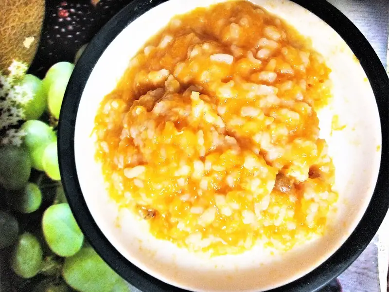

Фото: Nickispeaki, CC BY-SA 4.0

Каша тыквенно-рисовая
Сладковатая рисовая каша с тыквой на молоке без сахара
40 мин3 порц.152 ккал на порциюБ 4 · Ж 5 · У 23Русская кухня
Продукты на 3 порц.
- Тыква200 г
- Рис3 ст. л.
- Вода250 мл
- Молоко250 мл
- Сливочное масло10 г
Как готовить
- Очистите тыкву и нарежьте мелкими кубиками по 1 см. Рис промойте до прозрачной воды.
- Залейте тыкву и рис водой, доведите до кипения и варите на слабом огне 15 минут под крышкой.
- Влейте молоко и варите ещё 15 минут, часто помешивая, пока рис не станет совсем мягким.
- Разомните кашу толкушкой или пробейте блендером до нужной густоты.
- Добавьте сливочное масло, перемешайте и дайте постоять 5 минут под крышкой.
Совет. Молоко легко пригорает, поэтому берите кастрюлю с толстым дном и мешайте со дна. Для детей постарше можно не измельчать кашу.